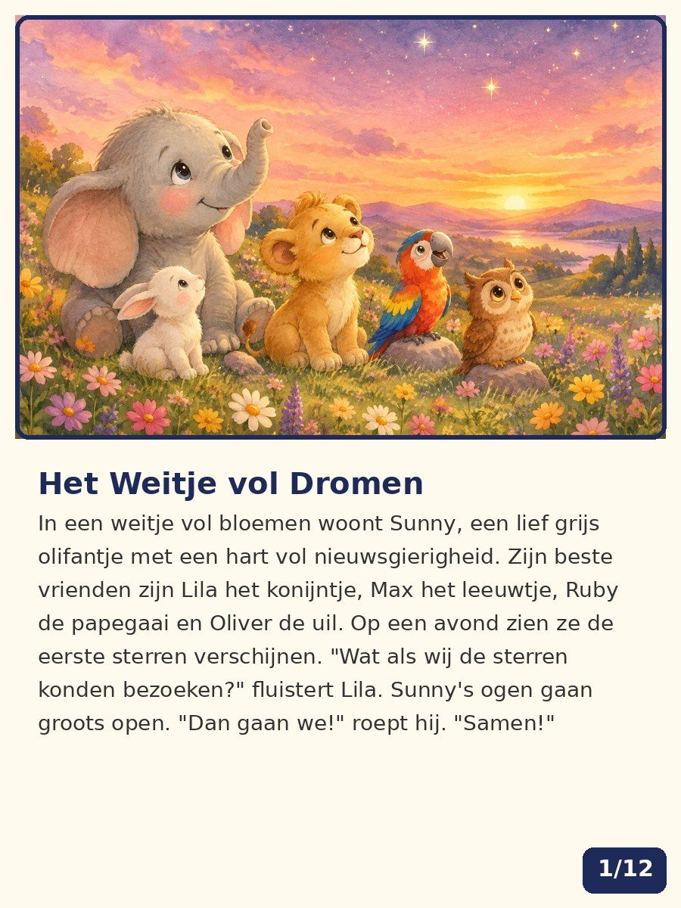
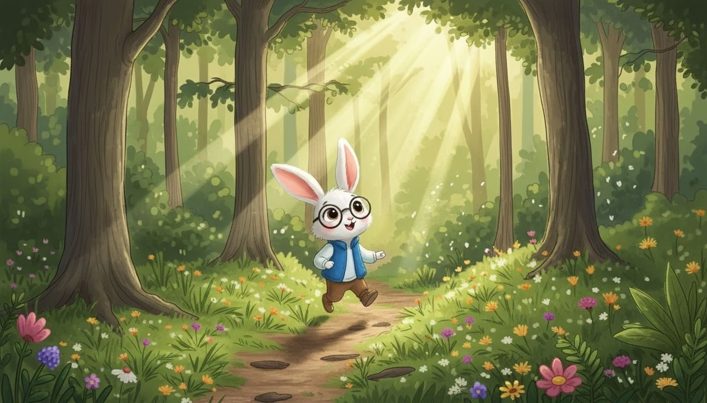
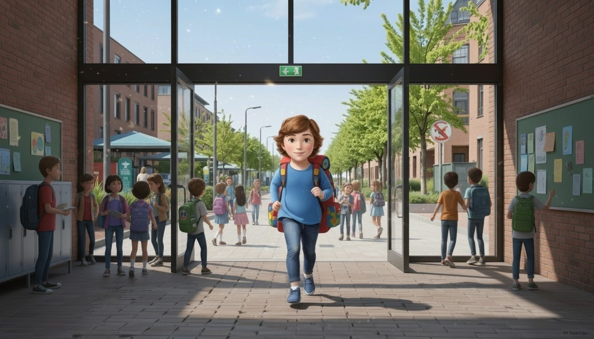

De beste school van Nederland — in één gratis app
Oefenen, lezen én leren: rekenen, letters, klanken, klokkijken, 6 gesproken talen, échte boeken met begripsvragen, badges en een sterren-winkel. De app leert mee met je kind.
🎓 Groep 1–8🌍 6 talen📖 4 boeken🛡️ 100% veilig📴 offline€0 gratis
Wat je kind allemaal leert
Vijftig+ oefeningen in 8 niveaus — van eerste letters tot procenten en logica. Eerst een mini-lesje, daarna oefenen, dan beloning.
🔢Rekenen compleettellen, plus/min tot 1000, tafels, breuken, procenten, splitsen — met blokjes en trucs
🔤Lezen vanaf groep 1letters → begin- én eindklanken → klinkers → woorden → spelling → verhaal begrijpen
🕰️Klokkijkenhele en halve uren op de analoge klok, én kwart over/voor + "hoe laat over 30 minuten?"
🌍6 talen, echt uitgesprokenEngels, Duits, Frans, Spaans, Sranan Tongo én Hebreeuws — tot A1-niveau met zinnetjes en verhaaltjes
📖Echte boeken erinSunny, Ziggy, Keesje en Samen Sterk — de échte bladzijden lezen met voorleesstem + begripsvragen
💡Eerst leren, dan oefenenbij elke eerste vraag een mini-les: "zo werkt optellen", "zo lees je een woord" — zoals een echte methode
Een app die mét je kind meegroeit
Niet alleen oefenen — de app onthoudt, beloont en blijft leuk.
🧠Slim breinfouten komen terug in een speciale "oefen je fouten"-ronde, met ezelsbruggetjes erbij
⭐Sterren = echt geldverdiende ⭐ wissel je in de winkel in voor hoedjes, huisdieren en achtergrond-wereldjes voor je held
🏆9 badges verzamelenvan eerste ronde tot week-streak — de badge-kast toont wat je al hebt
🐾Huisdier voerenkoop een huisdier en voer het elke dag → +1⭐ — kinderen komen vanzelf terug
👧👦Meerdere kinderenelk kind een eigen profiel op dezelfde tablet — eigen sterren, held en voortgang
🎉Gaat met de tijd meeSinterklaas, Kerst, Pasen, Koningsdag — op feestdagen speciale woorden; updates komen vanzelf via wifi
De boeken zitten ín de app
Echte bladzijden uit de G2B-boeken — lezen, luisteren, begrijpen.



📚 Bestel de echte boeken in de G2B-winkel
Veilig voor kinderen — zeker voor ouders
🔒Geen accountsnul registratie, nul wachtwoorden — openen en spelen
📵Geen trackers of reclamealles blijft op jullie eigen apparaat — er gaat niets naar internet
📴Werkt offlineinstalleerbaar als echte app (PWA) — daarna ook zónder wifi
📋Ouder-overzichtweekoverzicht, sterke en oefen-vakken, leerstijl-meting én printbaar rapport
🖨️Printbare werkbladenoefenblaadjes en kleurplaten — gratis les-materiaal voor thuis of de klas
🔊Nederlandse voorleesstemelke vraag, elk woord, elk boek wordt voorgelezen — óók in 6 vreemde talen
Klaar om te spelen?
Gratis, veilig en direct — werkt op tablet, telefoon en computer.
▶ Start G2B Schoolspelen